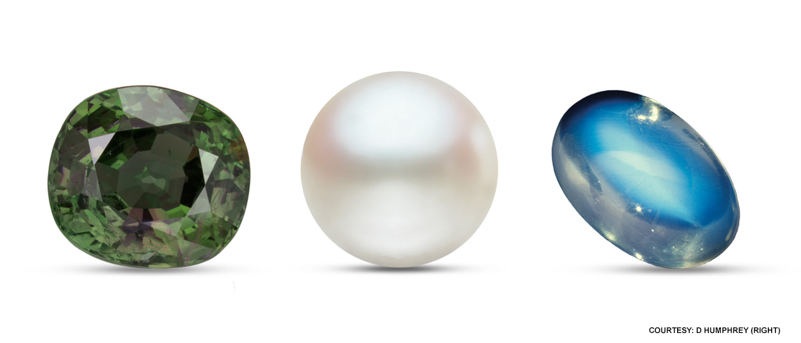
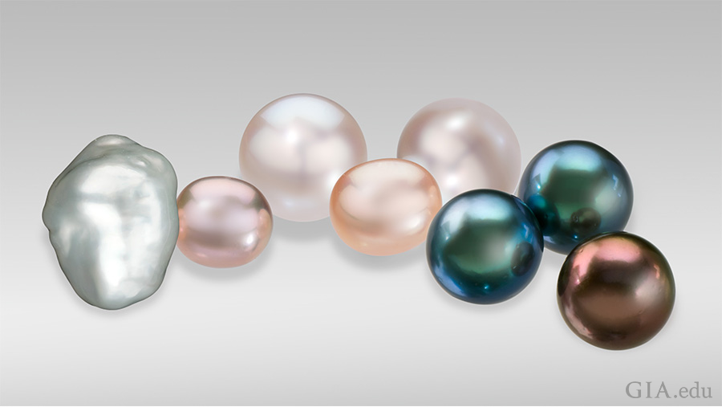
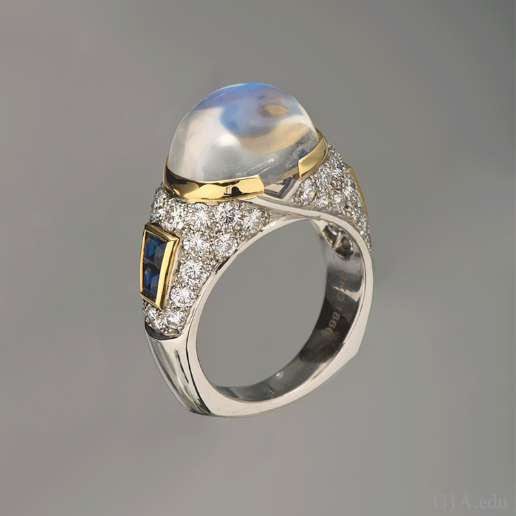
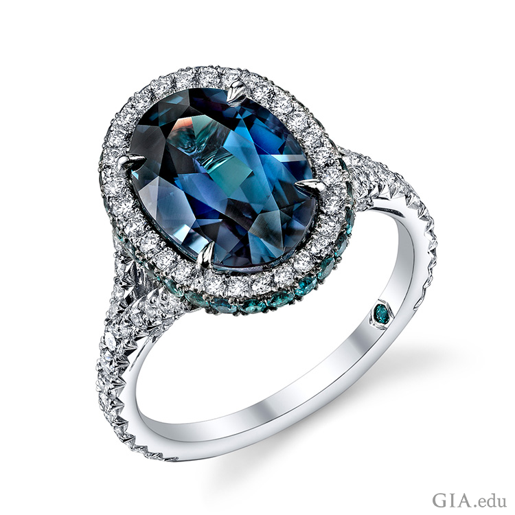

If you were born in the month of June, you will have three of your own.

The Pearl birthstone is from oceans, lakes and rivers. It is a wardrobe staple that women of all ages love. Our forebears were fascinated by the origin of pearls. Pearls were thought to be from heaven. The Chinese believed that this June birthstone came from the brain of a dragon.
Pearls are gems that grow inside a living saltwater or freshwater mollusk (either an oyster or a mussel).
Cultured pearls are raised in saltwater or freshwater pearl farms where the mollusks are cleaned and protected from predators. There are a variety of sizes, colors and shapes of cultured pearls.
Pearls have long been associated with purity, humility and innocence. So, traditionally pearls were a wedding gift.
Pearls were said to bring long life and prosperity in the ancient Sanskrit text. In Asia, Pearls were believed to cure indigestion and hemorrhages. The 19th century Arab physicians claimed that pearl powder alleviated depression and improved eyesight.
In Japan, China, Australia, Indonesia, Philippines and the southern coast of Southeast Asia are some of the places where saltwater cultured pearls are grown.
China is the dominant source of freshwater cultured pearls.
While Natural pearls were found in the Arabian Gulf for at least 5,000 years, divers have been recovering the June birthstone from the Red Sea since 300 BC. Pearls have been provided by the Strait of Mannar since 2000. Large quantities of pearls were recovered from the waters off Mexico, Central America and Venezuela during the 16th century. There are only a small amount of pearls in these areas today.
At 2.5 to 3.0 on the Mohs Scale of hardness, pearls are soft and need special care. They should be kept separate from other gemstones and metal jewelry. Plastic can emit a chemical that will damage the pearl’s surface, so never store it in a plastic bag. Apply makeup, hair products, and perfume, before putting on jewelry.
The best way to clean your June birthstone is to use a soft, damp cloth after each time the pearls are worn.

Moonstone is renowned for its adularescence, the light that appears to billow across a gemstone, giving it a special glow. The finest moonstones show a blue sheen against a colorless background. This June birthstone has been associated with both the Roman and Greek lunar deities. Hindu mythology claims that it is made of solidified moonbeams.
Moonstone is often associated with love, passion and fertility; it is believed to bring great luck.
India and Sri Lanka are the most important world locations for the moonstone. Moonstone can be found in parts of the United States, Brazil, Madagascar, Myanmar and Tanzania.
Moonstone has mild toughness and is a 6 on the Mohs scale. It may crack under high heat. Ultrasonic and steam cleaners shouldn’t be used on your moonstone. Warm soapy water with a soft brush is the best way to clean it.

The alexandrite birthstones show a vivid green to bluish green in daylight or fluorescent light, and an intense red to purplish red in the same light.
Alexandrite was named after the young Alexander II (1818–1881), the heir apparent to the Russian throne. The country was interested in the resemblance of the red and green colors to the military colors of Russia.
Alexandrite comes from Brazil, Sri Lanka and East Africa. The Ural Mountain deposits were eventually mined out.
The newer deposits contain some fine-quality stones, but they are not as bright as the 19th century Russian Alexandrites.
Because of scarcity, fine-quality Alexandrite is one of the more expensive colored gems.
This June birthstone is relatively hard—8.5 on the Mohs scale. It has excellent toughness and no cleavage, which is a tendency to break when struck. This makes it a good choice for rings and other mountings subject to daily wear.
It is relatively hard—8.5 on the Mohs scale. It has excellent toughness and no cleavage. It’s a good choice for rings and other mountings that are subject to daily wear.
It is best to clean it in warm, soapy water, ultrasonic and steam cleaners are usually safe to use to clean your June birthstone.